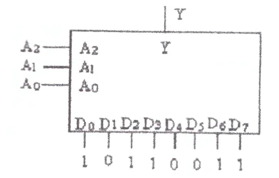
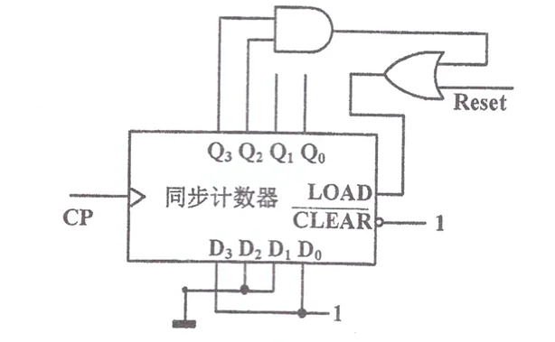
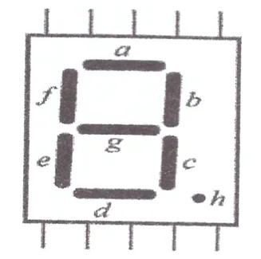
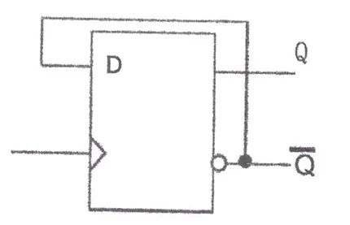
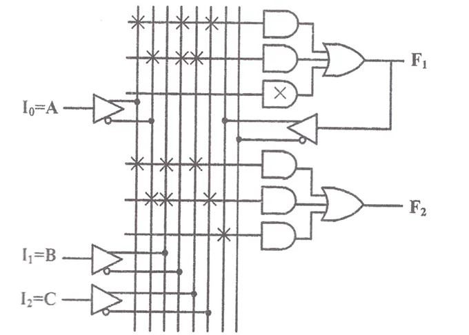
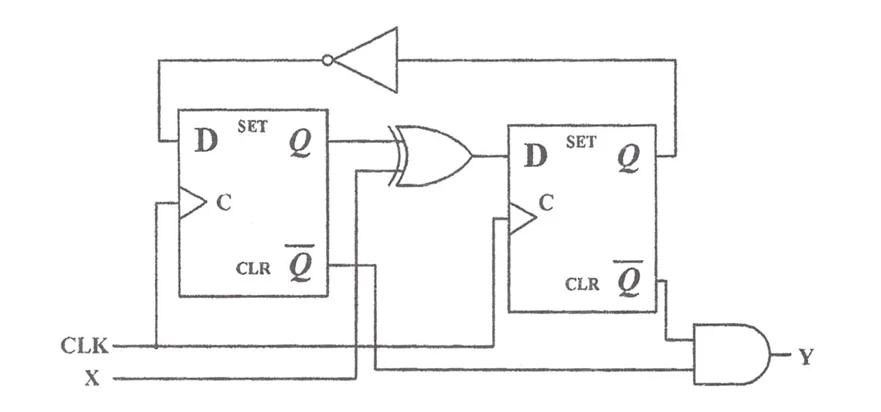
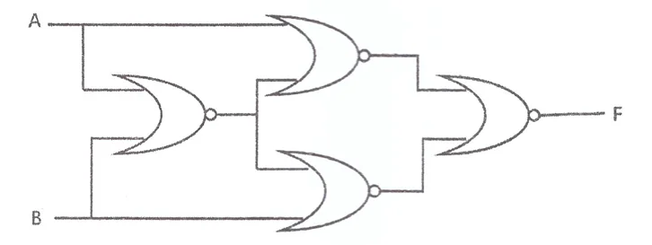
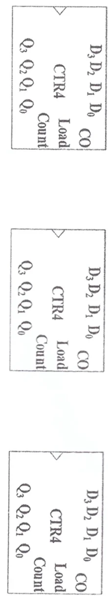
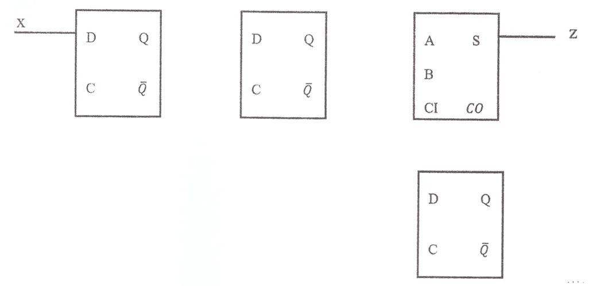

一、填空题（用合适的答案填入空格，每题2分，共20分）
1. A flip-flop has __________ stable states.
Storing an 8-bit binary number requires __________ flip-flops.
2. Number conversion: ==.
3. For odd parity, the parity bit for is (__________).
4. The SOM form of F=A⊕B⊕1 is __________.
5. A DRAM chip with 12-bit address line and 32-b it output data line has a maximum storage capacity of __________ bytes.
6. When change from 000 to 111, the data output sequence Y of Multiplexer is: (______________________________).

7. A counting circuit composed of a synchronous counter (As shown in the following figure), with an output of , then its output repeat counting sequence is ______________________________.

8. For the Common Cathode(阴极) Seven Segment Displayer (as shown in the following figure), to show character “5”, a~g should be (______________________________).

9. As shown in the following figure, if the Clock frequency is 100KHz, the frequency of Q is (______________________________).

10. For ,
Its NAND formula is (____________________).
Its NOR formula is (____________________).
二、选择题(选择一个正确的，填入空格中，每题2分，共20分)
1. N flip-flops can constitute a counter (in binary number) whose maximum count length is ____________________.
A. B. C. D.
2. Which of the following is false for a x DRAM where , ? __________
A. There are 4M addresses
B. The total capacity of this DRAM is 8 Mega-Bytes
C. When using a 12-to-4096 row decoder, we need a 1024-to-1 multiplexer in the column decoder output.
D. Each data output is 2 bytes.
3. For JK flip-flop, if J=K, it can be __________ flip-flop.
A. RS B. D C. T D. T'
4. Which of the following is not a weighted code: __________.
A. 8421BCD B. 5421BCD C. Excess 3 code D. 2421BCD
5. For Programmable Logic Array (PLA), (__________).
A. a programmable array of AND gates feeds a programmable array of OR gates
B. a fixed array of AND gates feeds a programmable array of OR gates
C. a programmable array of AND gates feeds a fixed array of OR gates
D. a fixed array of AND gates feeds a fixed array of OR gates
6. Odd parity function with 3 varibles has __________ “1” squares in its Karnaugh Map。
A. 2 B. 3 C. 4 D. 5
4. Which of the following is not a weighted code: __________.
7. For D Flip-flip, to make , should (__________)
A. B. C. D.
8. According to the PAL diagram given in the following figure, F2 can be : __________

A. B.
C. D.
9. Which of the following function expressions is equivalent to
?__________
A. B.
C. D.
10. A Sequential circuit is shown in the figure below, assuming that the propagation delay of an XOR gate is 3 ns, the propagation delay of a NOT-gate is 1ns, the Setup time of a D flip-flop is 1ns, the Hold time is 1ns, and the propagation delay is 2ns. Without considering the delay of the connection line, the maximum frequency of the CLK clock of the sequential circuit is:

A. 500MHz B. 250MHz C. 166.7MHz D. 125MHz
三、Simplification（10分）
1、Simplify the following function to SOP form.（5分）
2、Simplify the following function to SOP form:
四、简答题（14分）
1. Write the logical expression of the following figure, and explain its function.（4分）

2. Write a behavioral Verilog module description for the circuit from Problem “二.10”.（10分）
五、设计题（36分）
1. Use three synchronous binary counters and logic gates to construct a three-digit date BCD counter, that is, count from 001 to 365, and then start counting again. Please draw the corresponding connection diagram.（12分）

2. Design a three-variable "majority voter" with a 3-8 decoder and appropriate logic gates. In this "majority voter",there are three input signals (A,B,C), one output F. If two or three input signals are TRUE, then F is TRUE, otherwise, F is FALSE. Here let TURE =1, FALSE =0.
Please give (1) Truth table （2）Boolean Function (3) Logic Circuit.（12分）
3. Design a binary serial multiplier using three D flip-flops and a full adder. The multiplier has one input and one output. The input x is a binary serial sequence signal from the least significant bit, and the output z is another serial sequence (from the least significant bit) such that z = 5x.（12分）
